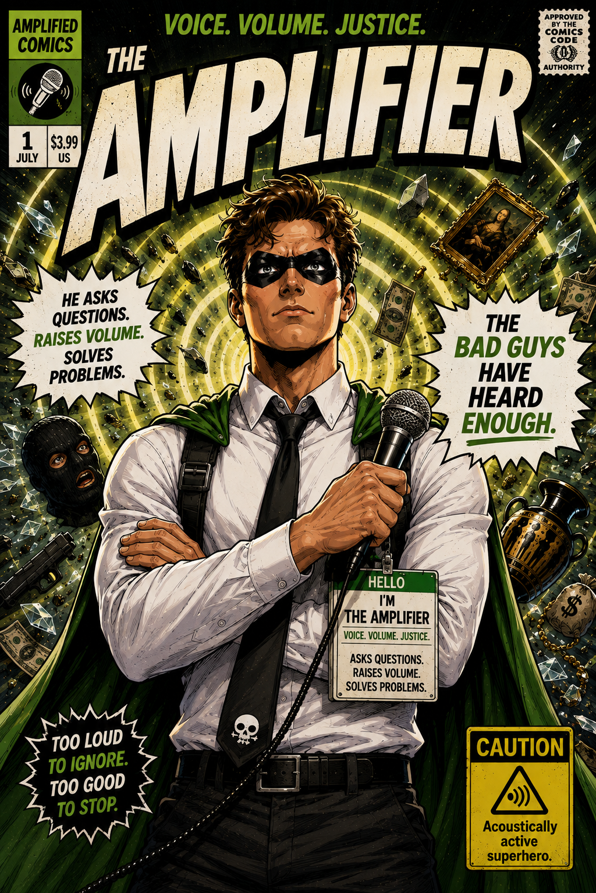
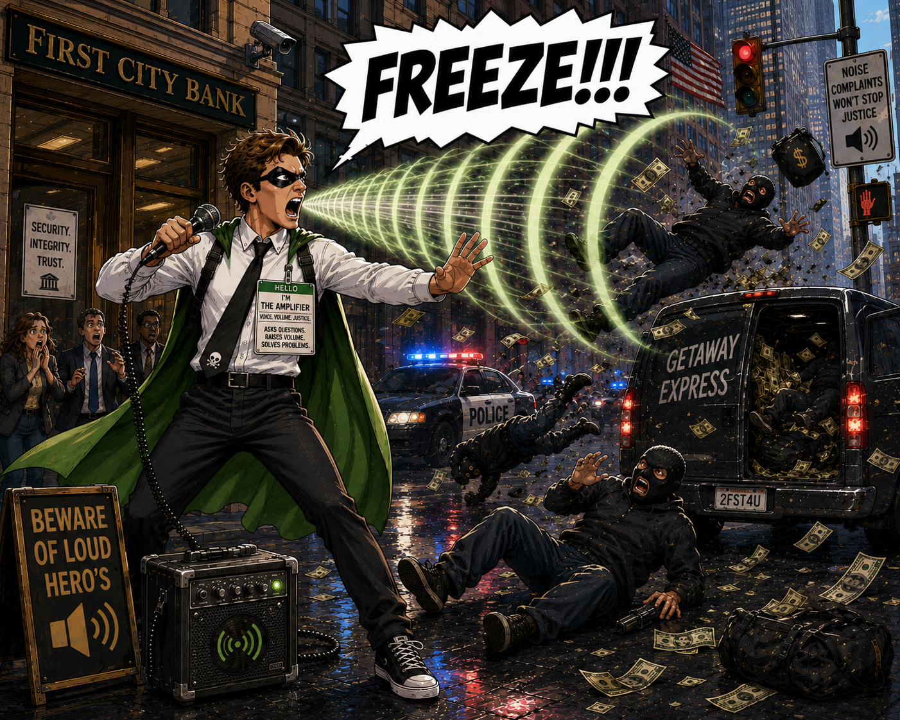
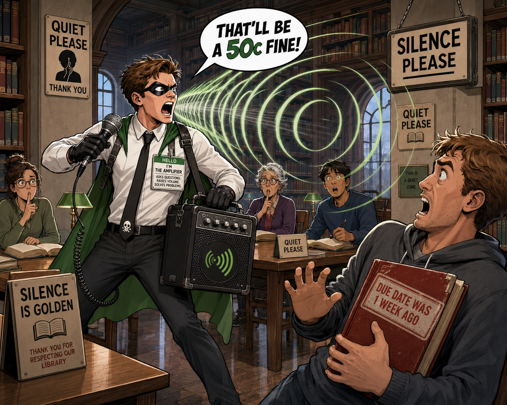
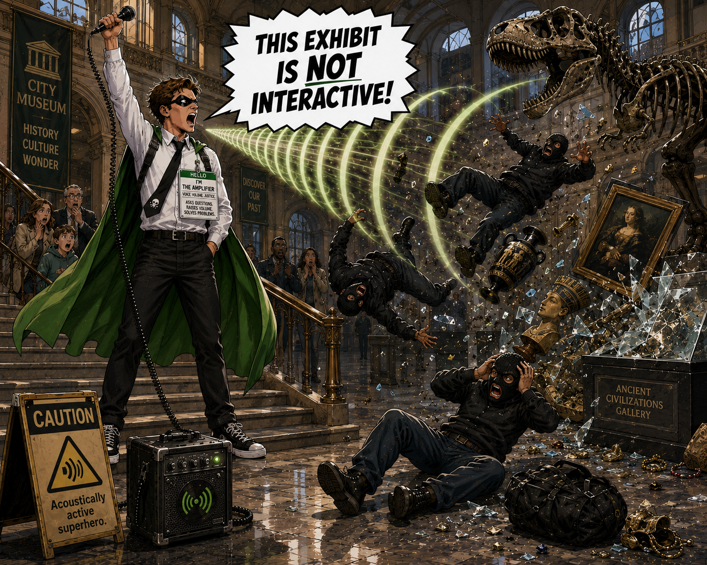
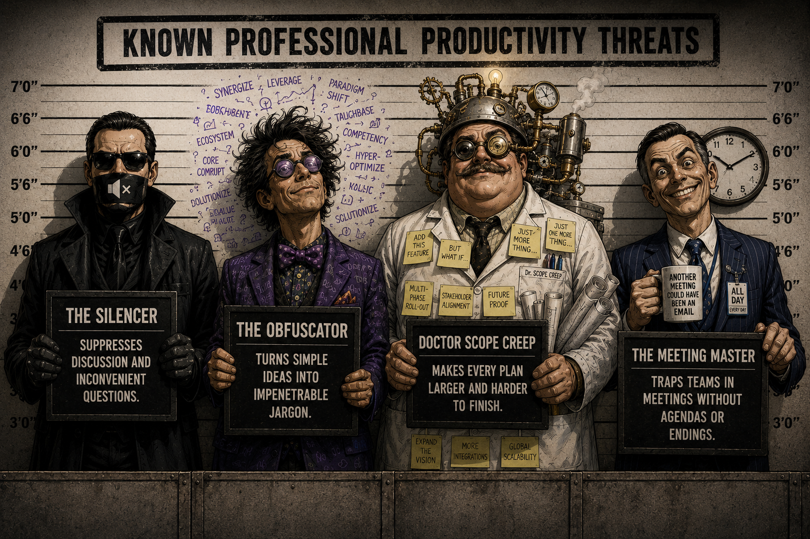

Issue No. 1
The Amplifier
Voice. Volume. Justice.
His equipment is mostly theatrical. His voice is the real superpower.
Issue No. 1
Voice. Volume. Justice.
His equipment is mostly theatrical. His voice is the real superpower.

01 / Identity
The Amplifier is curious, confident, relentlessly inquisitive—and famously loud. He turns the habits of an energetic office problem-solver into full-scale superhero abilities.
THE AMPLIFIER
Asks questions.
Raises volume.
Solves problems.
He arrives in a crisp white shirt, a skull-tipped black tie, dark trousers, black gloves, and a green cape. The office name badge stays on. Justice may be unpredictable; the dress code is not.
02 / Power
At full volume, his voice becomes visible force: stopping criminals, rattling windows, interrupting getaway vehicles, and sending unsecured paperwork into low orbit.
An impossible wave of sound, precisely directed and extremely difficult to ignore.
His quieter power is asking exactly the question that exposes a flaw in the plan. Villains often survive the sonic blast. Their assumptions do not.
The microphone contributes almost nothing.

03 / Case File 001
The book was one week late. The room was filled with signs requesting silence. The borrower was already nervous.
The Amplifier assessed the situation, raised his entirely unnecessary microphone, and delivered justice at a volume normally reserved for natural disasters.
“THAT'LL BE A 50c FINE!”


04 / Off Duty
At a kitchen table in the warm light of an ordinary home, The Amplifier sits beside a child working through a difficult homework problem.
His mask is off. His green cape hangs over the chair. The microphone and portable amplifier have been left on the floor.
He does not supply the answer. He points to the page and asks one patient question. The child's expression begins to brighten.
Curiosity is as important to him as volume. Sometimes people need power. Sometimes they need someone to listen.
05 / Classified
He was once an ordinary office worker known for useful questions and a voice normally associated with public-address systems.
During a mysterious incident involving experimental acoustic technology, a microphone, and a meeting that had already gone fifteen minutes over time, his natural voice became superhuman.
He discovered that he could project sound with extraordinary force.
So he bought a bigger microphone. And an amplifier.
Neither was necessary.
06 / Known Threats
Suppresses discussion, disagreement, and inconvenient questions.
Turns simple ideas into impenetrable jargon.
Makes every plan larger, slower, and harder to finish.
Traps teams in meetings without agendas or endings.

07 / Field Reading
The official scale has five settings:
Equipment status: powered on.
Equipment necessity: still disputed.
End of Issue No. 1
His greatest weapons are his voice and the question nobody else thought to ask.
When justice requires it, everyone is going to hear about it.